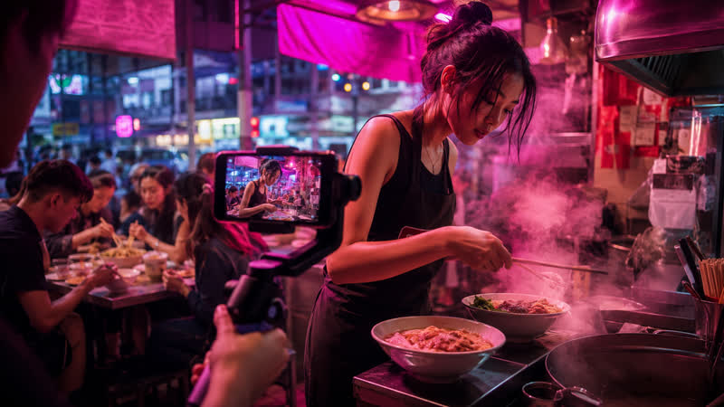

The challenge
Kowloon Noodle Co. had three decades of loyal regulars — and almost no awareness with anyone under 30. Weekday lunch held. Weekends collapsed. Newer, louder competitors two streets away were capturing the Instagram generation while the best noodles in Sham Shui Po sat half-empty.
This wasn't a content ask. It was a demand problem: make a new audience discover, believe, and show up on Saturday.
The strategy
We built a growth campaign around one platform idea: the thing the regulars already know. No rebrand. No menu rewrite. Position the craft — 老闆 Wong's hands, the dough, the broth — as the proof, then run it as a short-form acquisition system with bilingual creative and a clear weekend CTA.
AI accelerated concepting and hook testing; agency judgement set the brand rules. Paid was held back until organic winners were clear, then used only to amplify what already travelled.
The campaign
One production day. Twelve vertical assets. A hero craft film of dough slammed, folded and pulled — shot at 120fps, cut to nine seconds, sound-led, no music. Supporting chapters covered the 4am prep run, a 1998 regular, and a sceptical first-timer tasting the broth.
Every cut shipped with burned-in 中英 captions for MTR viewing. We launched organic for nine days, read retention, then put modest paid behind the top two hooks targeting weekend diners within a Kowloon radius. Landing point wasn't a website — it was the queue.
The results
The dough film crossed a million views in nine days. Full campaign reach hit 2.4M. Weekend covers rose 180% and held through the following quarter, with a wait list that now starts before noon.
They hired a second front-of-house staffer. That's the agency KPI that mattered.
- Agency role
- Strategy, Creative, Production, Media
- Timeline
- 3-week campaign · 1 shoot day
- Channels
- TikTok · Reels · Shorts · Paid social
- Year
- 2026 · Sham Shui PoBasis Media HK